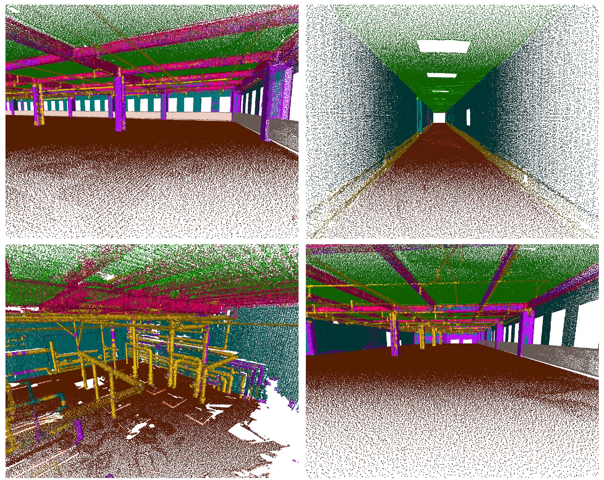
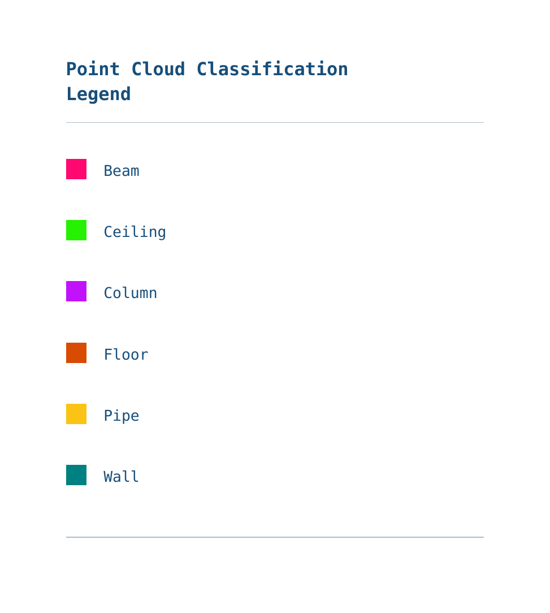
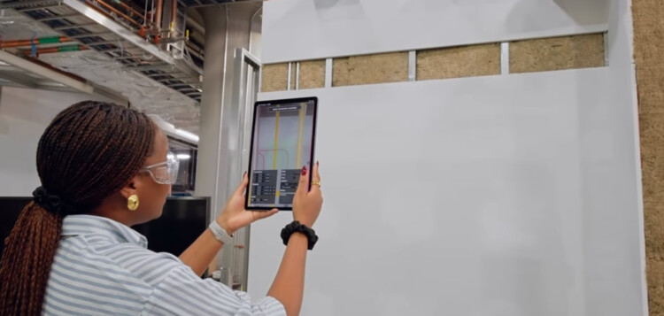
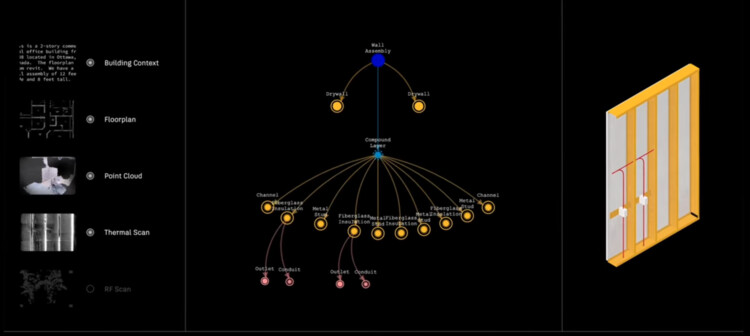
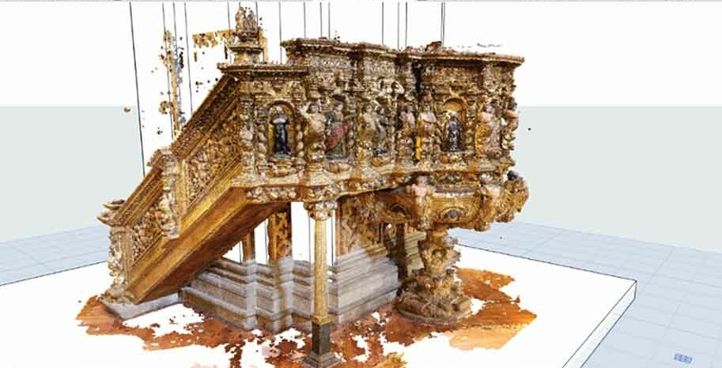

← Back
Map
SOURCE 01
01
Point Cloud Classification into 3 Classes: Principal Facade in Green, Recesses in Blue, Protrusions in Red

SOURCE 04

02
Point Cloud Semantic Segmentation of Building Elements

SOURCE 02
03
X-ray Vision by Arcadis and Autodesk

SOURCE 02
04
X-ray Vision by Arcadis and Autodesk

SOURCE 03
05
Point Cloud Data in an Architectural Heritage Information Model